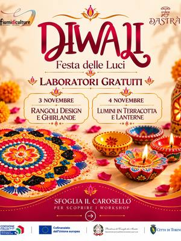

Other workshops in Turin and around
Candle, soap, photography, origami, bookbinding, fablab and other workshops in Turin and around.
Search all workshops42 activities coming up · updated on 30 October 2026
 from23octOtherPhoto stories: smartphone photographyfrom Friday 23 October to Friday 6 November, every FridayMirafiori (TO) · Freewith Fondazione CAMERA at Casa nel Parco
from23octOtherPhoto stories: smartphone photographyfrom Friday 23 October to Friday 6 November, every FridayMirafiori (TO) · Freewith Fondazione CAMERA at Casa nel Parco sat31octOtherSoap-making workshop: make your own soapSaturday 31 October, 09:00–13:00Pinerolo (TO) · 50 €with Courtesia at Nodo Concept Space
sat31octOtherSoap-making workshop: make your own soapSaturday 31 October, 09:00–13:00Pinerolo (TO) · 50 €with Courtesia at Nodo Concept Space sat31octOtherColour analysis: find your seasonSaturday 31 October, 10:30Quadrilatero (TO) · 39 €with BAO NOW
sat31octOtherColour analysis: find your seasonSaturday 31 October, 10:30Quadrilatero (TO) · 39 €with BAO NOW sat31octOtherSelf make-up: a make-up lessonSaturday 31 October, 10:30Quadrilatero (TO) · 39 €with BAO NOW
sat31octOtherSelf make-up: a make-up lessonSaturday 31 October, 10:30Quadrilatero (TO) · 39 €with BAO NOW sat31octOtherGrowing ourselves: a pot and seedsSaturday 31 October, 16:00–18:30Turinwith Viviana Russo at Spazio IAIA
sat31octOtherGrowing ourselves: a pot and seedsSaturday 31 October, 16:00–18:30Turinwith Viviana Russo at Spazio IAIA sat31octOtherHalloween tarot: a free readingSaturday 31 October, 18:00Vanchiglia (TO) · Freewith Raffaella Siracusa at Quadratino
sat31octOtherHalloween tarot: a free readingSaturday 31 October, 18:00Vanchiglia (TO) · Freewith Raffaella Siracusa at Quadratino sat31octOtherHalloween Night: pumpkin carvingSaturday 31 October, 18:00–21:00Pino Torinese (TO) · 15 €with Il Giardino di Rosero
sat31octOtherHalloween Night: pumpkin carvingSaturday 31 October, 18:00–21:00Pino Torinese (TO) · 15 €with Il Giardino di Rosero from4octOtherVisual communication: graphic design basicsfrom Sunday 4 October to Sunday 8 November, every Sunday, 10:30–12:30Santa Rita (TO)with Ad Libitum Edizioni at Anima Atelier
from4octOtherVisual communication: graphic design basicsfrom Sunday 4 October to Sunday 8 November, every Sunday, 10:30–12:30Santa Rita (TO)with Ad Libitum Edizioni at Anima Atelier from2novOtherShoot and Tell: reportage photographyfrom Monday 2 November, every Monday, 18:30–20:00Barriera di Milano (TO) · 100 €with Alessandro Bello at Bagni Pubblici
from2novOtherShoot and Tell: reportage photographyfrom Monday 2 November, every Monday, 18:30–20:00Barriera di Milano (TO) · 100 €with Alessandro Bello at Bagni Pubblici
tue3novOtherDivali: rangoli and garlandsTuesday 3 November, 16:30San Salvario (TO) · Freewith Vaishali Raokhande at Fiumi di Culture from3novOtherPlaying with signs: Italian Sign Languagefrom Tuesday 3 November to Tuesday 15 December, 18:30Vanchiglietta (TO)with Bocciofila Vanchiglietta
from3novOtherPlaying with signs: Italian Sign Languagefrom Tuesday 3 November to Tuesday 15 December, 18:30Vanchiglietta (TO)with Bocciofila Vanchiglietta- wed4novOtherDivali: terracotta lamps and lanternsWednesday 4 November, 16:30San Salvario (TO) · Freewith Vaishali Raokhande at Fiumi di Culture
 thu5novOtherSaldo! Vol. 1: basic solderingThursday 5 November, 18:00–20:00Lingotto (TO) · from 10 €with Silvio Navaretti at Fablab Torino
thu5novOtherSaldo! Vol. 1: basic solderingThursday 5 November, 18:00–20:00Lingotto (TO) · from 10 €with Silvio Navaretti at Fablab Torino- sat7novOtherBook Club 2.0: «L’era dell’Acquario»Saturday 7 November, 17:00San Salvario (TO) · Freewith Book Club 2.0
 sun8novOtherPhotography workshop: outdoor portraitsSunday 8 November, 09:00–13:00San Salvario (TO) · 97 €with Aldo Diazzi at WorkshopFotografici.eu
sun8novOtherPhotography workshop: outdoor portraitsSunday 8 November, 09:00–13:00San Salvario (TO) · 97 €with Aldo Diazzi at WorkshopFotografici.eu sun8novOtherStreet photography workshop: city centreSunday 8 November, 14:00–17:00Centro (TO) · 55 €with Aldo Diazzi at WorkshopFotografici.eu
sun8novOtherStreet photography workshop: city centreSunday 8 November, 14:00–17:00Centro (TO) · 55 €with Aldo Diazzi at WorkshopFotografici.eu sun8novOtherWeaving the story: photo weavingSunday 8 November, 14:30–17:30Ivrea (TO) · from 15 €with Anastasia Moro at Open Art House
sun8novOtherWeaving the story: photo weavingSunday 8 November, 14:30–17:30Ivrea (TO) · from 15 €with Anastasia Moro at Open Art House sun8novOtherMake your own perfume: a scent and aperitivoSunday 8 November, 18:00Quadrilatero (TO) · 39 €with BAO NOW
sun8novOtherMake your own perfume: a scent and aperitivoSunday 8 November, 18:00Quadrilatero (TO) · 39 €with BAO NOW tue10novOtherThe Fragrance Bar: a home fragrance diffuserTuesday 10 NovemberSan Salvario (TO) · 50 €with Aperi Pods
tue10novOtherThe Fragrance Bar: a home fragrance diffuserTuesday 10 NovemberSan Salvario (TO) · 50 €with Aperi Pods from10novOtherRelief carving: a wooden bas-relieffrom Tuesday 10 November to Tuesday 1 December, every Tuesday, 19:00–21:30Turinwith Rašid Nikolić (The Gipsy Marionettist) at Bagni Pubblici
from10novOtherRelief carving: a wooden bas-relieffrom Tuesday 10 November to Tuesday 1 December, every Tuesday, 19:00–21:30Turinwith Rašid Nikolić (The Gipsy Marionettist) at Bagni Pubblici thu12novOtherMake your Moon: a ritual candle and oraclesThursday 12 November, 20:00Moncalieri (TO)with Soffio nel Vento with Tarot With Love
thu12novOtherMake your Moon: a ritual candle and oraclesThursday 12 November, 20:00Moncalieri (TO)with Soffio nel Vento with Tarot With Love fri13novOtherOrigami workshop: table lampshadeFriday 13 November, 17:00–19:00San Salvario (TO) · 40 €with Origami Pop
fri13novOtherOrigami workshop: table lampshadeFriday 13 November, 17:00–19:00San Salvario (TO) · 40 €with Origami Pop sat14novOtherCandle workshop: make your own candlesSaturday 14 November, 09:00–13:00Borgo Po (TO) · sold outwith Il Tempio Creativo at TObed
sat14novOtherCandle workshop: make your own candlesSaturday 14 November, 09:00–13:00Borgo Po (TO) · sold outwith Il Tempio Creativo at TObed sat14novOtherColour analysis: find your seasonSaturday 14 November, 10:30Quadrilatero (TO) · 39 €with BAO NOW
sat14novOtherColour analysis: find your seasonSaturday 14 November, 10:30Quadrilatero (TO) · 39 €with BAO NOW- mon16novOtherThe mystery of tarot: symbols and readingsMonday 16 November, 20:00Santa Rita (TO)with Nume Olistica at Anima Atelier
- sat21novOther3D printing workshop: a Christmas gift boxSaturday 21 NovemberTurinwith Hiki3D
 sat21novOtherTiffany glass workshop: your first pieceSaturday 21 November, 10:00–17:00Turin · 130 €with Across the Glass
sat21novOtherTiffany glass workshop: your first pieceSaturday 21 November, 10:00–17:00Turin · 130 €with Across the Glass sat21novOtherMake your own perfume: a scent and a creamSaturday 21 November, 10:30Quadrilatero (TO) · 39 €with BAO NOW
sat21novOtherMake your own perfume: a scent and a creamSaturday 21 November, 10:30Quadrilatero (TO) · 39 €with BAO NOW- sat21novOtherOrigami workshop: painted lampshadeSaturday 21 November, 16:00–19:00San Salvario (TO) · 40 €with Origami Pop
- wed25novOtherAppo: poetry meet-upWednesday 25 November, 18:00Vanchiglia (TO) · Freewith Approdo Poetico Torino at Spazio Costanza
 wed25novOtherHow To: 3D printing for beginnersWednesday 25 November, 18:00–19:30Lingotto (TO) · sold outwith Fablab Torino
wed25novOtherHow To: 3D printing for beginnersWednesday 25 November, 18:00–19:30Lingotto (TO) · sold outwith Fablab Torino sat28novOtherChristmas lanterns: creative workshopSaturday 28 November, 09:30–17:00Borgo Po (TO)with Laura Cortinovis at TObed
sat28novOtherChristmas lanterns: creative workshopSaturday 28 November, 09:30–17:00Borgo Po (TO)with Laura Cortinovis at TObed sat28novOtherKREA: personalised candlesSaturday 28 November, 15:30–17:30Pianfei (CN)with Philo Etico at Alter Ego
sat28novOtherKREA: personalised candlesSaturday 28 November, 15:30–17:30Pianfei (CN)with Philo Etico at Alter Ego- sun29novOtherOrigami intensive: a framed table lampSunday 29 November, 14:00–19:00San Salvario (TO) · 80 €with Origami Pop
- sat5decOther3D printing workshop: a Christmas gift boxSaturday 5 DecemberTurinwith Hiki3D
 wed9decOtherHow To: CNC milling for ChristmasWednesday 9 December, 18:00–20:00Lingotto (TO)with Damiano Frison at Fablab Torino
wed9decOtherHow To: CNC milling for ChristmasWednesday 9 December, 18:00–20:00Lingotto (TO)with Damiano Frison at Fablab Torino- sat12decOtherTiffany glass workshop: Christmas specialSaturday 12 December, 10:00–17:00Turin · 130 €with Across the Glass
 sat26decOtherPhotowalk: exploring the city as a groupSaturday 26 December, 10:30–12:30Quadrilatero (TO) · 2 €with BlaBla Photowalk Events
sat26decOtherPhotowalk: exploring the city as a groupSaturday 26 December, 10:30–12:30Quadrilatero (TO) · 2 €with BlaBla Photowalk Events- dateto be confirmedOtherCascina Roccafranca: this season’s coursesDate to be confirmedMirafiori (TO)with Cascina Roccafranca
 dateof your choiceOtherUpholstery and restyling: poufs and furnitureDate of your choiceBarriera di Milano (TO) · from 20 €with Magazzini Tessili
dateof your choiceOtherUpholstery and restyling: poufs and furnitureDate of your choiceBarriera di Milano (TO) · from 20 €with Magazzini Tessili- dateto be confirmedOtherPhotography course: capturing an emotionDate to be confirmedSan Mauro Torinese (TO)with Davide Furia at upTOyou
- dateto be confirmedOtherOrigami workshop: from paper to objectDate to be confirmedSan Mauro Torinese (TO)with Golnaz Esmaeeli at upTOyou